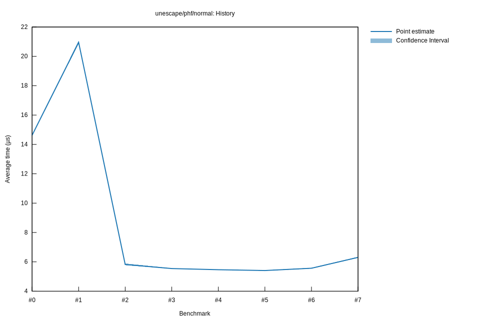

# 42025-10-29T22:26:54-07:00
|
Lower Bound |
Estimate |
Upper Bound |
| Value: |
5.44µs |
5.46µs |
5.48µs |
| Throughput: |
2959.39MiB/s |
2949.16MiB/s |
2938.32MiB/s |
| Change in Value: |
-2.1223% |
-1.0396% |
+0.1557% |
| Change in Throughput: |
+2.1683% |
+1.0505% |
-0.1555% |
Change within noise threshold.
# 32025-10-29T22:20:17-07:00
|
Lower Bound |
Estimate |
Upper Bound |
| Value: |
5.52µs |
5.54µs |
5.56µs |
| Throughput: |
2917.06MiB/s |
2906.91MiB/s |
2896.11MiB/s |
| Change in Value: |
-5.2524% |
-4.2858% |
-3.3671% |
| Change in Throughput: |
+5.5436% |
+4.4777% |
+3.4844% |
No change in performance detected.
# 22025-10-29T19:44:38-07:00
|
Lower Bound |
Estimate |
Upper Bound |
| Value: |
5.77µs |
5.82µs |
5.90µs |
| Throughput: |
2791.97MiB/s |
2769.59MiB/s |
2733.15MiB/s |
| Change in Value: |
-72.666% |
-72.379% |
-72.103% |
| Change in Throughput: |
+265.84% |
+262.04% |
+258.46% |
No change in performance detected.
# 12025-10-29T19:01:29-07:00
|
Lower Bound |
Estimate |
Upper Bound |
| Value: |
20.86µs |
20.95µs |
21.06µs |
| Throughput: |
772.34MiB/s |
768.97MiB/s |
765.19MiB/s |
| Change in Value: |
+42.093% |
+43.598% |
+44.937% |
| Change in Throughput: |
-29.624% |
-30.361% |
-31.004% |
No change in performance detected.
# 02025-10-26T16:45:52-07:00
|
Lower Bound |
Estimate |
Upper Bound |
| Value: |
14.58µs |
14.62µs |
14.66µs |
| Throughput: |
1104.83MiB/s |
1101.95MiB/s |
1099.13MiB/s |